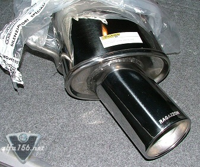
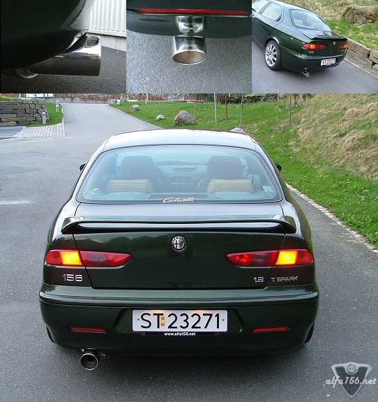

| .: Ragazzon muffler :. |
Me and a friend used about 30 minutes to fit it. We had to get under the car and for that I reversed the car to a little ramp. He did most of it as he was a bit experienced with this kind of work, but it was only one nut to get off and two rubber bits in the back and the old one were off. Hardest part was actually to unscrew the nut as it had rusted a bit. Once mounted I started the car and the second I turned on the engine there was no doubt that something was |
 |

| .: Ragazzon muffler :. |